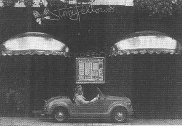

1985 · Autocar
Club Class
London nightclub owner Peter Stringfellow traded his supercars for a pink Gamine.
By Michael Harvey, ‘Me and My Car’, Autocar, 26 June 1985.
London nightclub owner Peter Stringfellow has owned many exotic cars. Michael Harvey was amazed at his latest purchase.
“I was fond of many of my cars but, in the end, they don't stand for much”
Peter Stringfellow is one of London's most successful entrepreneurs in the entertainment field, owning both the remarkable Hippodrome and Stringfellows night club. If you think he sounds like the type of person who would buy a Porsche, a Ferrari, or even a Rolls-Royce, you nowadays would be well wide of the mark. In fact, he drives a 1969 Fiat 500 Gamine — in a shocking shade of pink. It was apparently love at first sight: “I came out of the club one night and there it was, for sale. I paid £3,959 on the spot. It's so cute, but what a pig to drive!”
The Gamine reflects more than one thing about Stringfellow — he is very down to earth, and simply no longer interested in exotica. He has owned a stream of cars to make the likes of me green with envy, including Mercedes-Benzes, Porsches and E-type Jaguars. The Porsche 3.3 Carrera was his favourite. “When I moved down to London to open the club, I sold everything, including the Porsche, which was too expensive to run. I said goodbye and have never owned anything like it since.” Certainly it would be ridiculous to try and compare the Gamine to the Carrera.
His early vehicles were mostly vans and dormobiles, but these suited him while he was starting to create his nightclub empire. His first business ventures were in hired halls, a long way from the ultra-high-tech world of the Hippodrome. The vans were so dominant in his youth that he even passed his test in a three-ton bread van at the age of 17. “It was so heavy that when I transferred to a Commer Cob I almost destroyed it — it was so fast!” A series of vans was to follow, including a Jowett and an A40, unlikely transport for an ambitious young man. “For a long time, I was interested only in getting from A to B. I never bothered to put any oil in or check the basics.”
In the sixties, he graduated to cars, deciding on a Mini, which was closely followed by a Triumph 1300. “I wanted it to grow up into a Vitesse!” Then, as a reflection of his growing stature, came a Bentley R and a Rolls-Royce. Whenever the expanding club empire demanded further investment, a more modest vehicle followed — “I bought a Viva Brabham with the go-faster stripes. With my usual lack of regard, I regularly thrashed it up to Leeds, and it retaliated by rarely coming back again.” A Rover, one of the first V12 E-types and a Jensen Interceptor were bought between the Viva and the next Rolls. “The Interceptor was a joke. The garage got to know it better than I did. I would make it to the end of the motorway and it would break down.”
Much to the disgust of Scott, his Formula Ford racing son, Stringfellow entered his American car phase next, owning a '77 Stingray and a '76 Bicentennial Cadillac Convertible — the last of the long Cadillacs — before Scott persuaded his father to purchase a 3.3-litre Porsche. Stringfellow's choice of cars had now settled down, and he bought a Mercedes 350SEL and a Jeep Golden Eagle, the last ‘serious’ cars he owned.
Of his many cars, he says: “I was fond of a lot of them but, in the end, they don't stand for much. The little Fiat is such fun — so charismatic and so cheeky.” The Fiat created quite a stir outside Stringfellows as the photos were taken. Stringfellow elected to leave it on the pavement as we grabbed a quick coffee. “Perhaps people will think it's there for a publicity stunt?”
Stringfellow has just been given a parking ticket after leaving the car outside the Hippodrome. “You pay astronomical rents in London and you can't even park outside your own property.”
